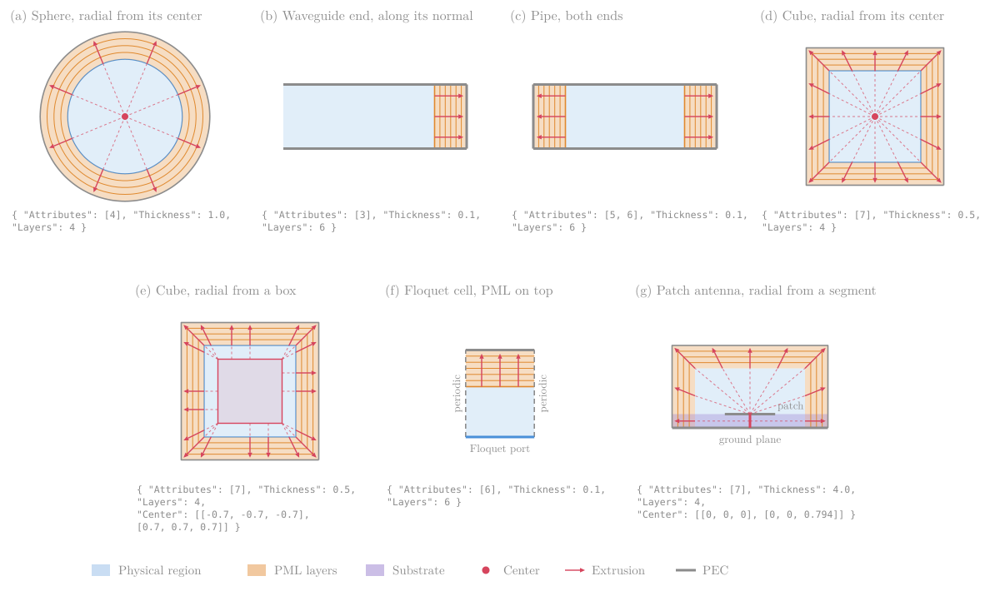
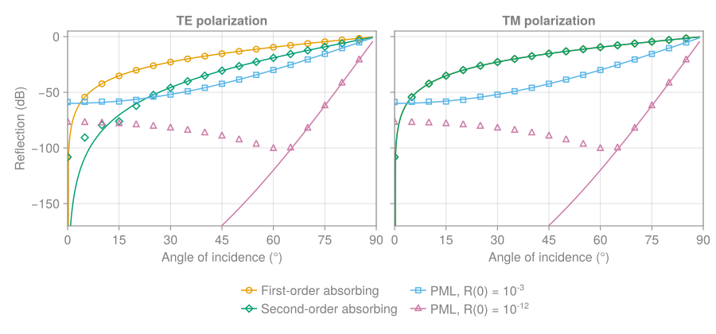

Boundary Conditions
Perfect electric conductor (PEC) boundary
The perfect electric conductor (PEC) boundary condition (zero tangential electric field) is specified using the "PEC" boundary keyword under config["Boundaries"]. It is a homogeneous Dirichlet boundary condition for the frequency or time domain finite element formulation, as well as the magnetostatic formulation.
For electrostatic simulations, the homogeneous Dirichlet boundary condition is prescribed using the "Ground" boundary keyword which prescribes zero voltage at the boundary.
Perfect magnetic conductor (PMC) boundary
The perfect magnetic conductor (PMC) boundary condition (zero tangential magnetic field) is a homogeneous Neumann boundary condition for the frequency or time domain finite element formulation, as well as the magnetostatic formulation. It is the natural boundary condition and thus it has the same effect as not specifying any additional boundary condition on external boundary surfaces. It can also be explicitly specified using the "PMC" boundary keyword under config["Boundaries"].
Likewise, for electrostatic simulations, the homogeneous Neumann boundary condition implies a zero-charge boundary, and thus zero gradient of the voltage in the direction normal to the boundary. This is specified using the "ZeroCharge" boundary keyword under config["Boundaries"].
Impedance boundary
The impedance boundary condition is a mixed (Robin) boundary condition and is available for the frequency or time domain finite element formulations and thus for eigenmode or frequency or time domain driven simulation types. It is specified using the "Impedance" boundary keyword. The surface impedance relating the tangential electric and magnetic fields on the boundary is computed from the parallel impedances due to the specified resistance, inductance, and capacitance per square.
Rational impedance boundary
A surface impedance boundary whose per-square impedance is an arbitrary rational function of frequency can be specified using the "RationalImpedance" boundary keyword. The surface impedance $Z_s(s) = N(s)/D(s)$, with $s = i\omega$, is given by the real coefficients of the numerator and denominator polynomials, ordered from highest to lowest degree (the roots of $N$ and $D$ are the zeros and poles of $Z_s$). This generalizes the parallel-RLC impedance boundary to any passive lumped-network response, for example a fitted rational approximation of a measured or synthesized surface impedance. Warnings are emitted for inputs that cannot correspond to a passive (positive-real) impedance. It is available only for frequency domain driven, eigenmode, and boundary mode simulations. In eigenmode simulations, when the resulting contribution to the system matrix is not polynomial in frequency, it is handled by the nonlinear eigenvalue solver.
Absorbing (scattering) boundary
Absorbing boundary conditions at farfield boundaries, also referred to as scattering boundary conditions, can be applied using the "Absorbing" boundary keyword under config["Boundaries"]. The first-order absorbing boundary condition is a special case of the above impedance boundary and is available for eigenmode or frequency or time domain driven simulation types. The second-order absorbing boundary condition is only available for frequency domain simulations; its boundary curl operator requires a 3D mesh. It neglects the term depending on the divergence of the tangential field (see Other boundary conditions), so that it only improves on the first-order condition for TE fields, with the electric field tangential to the boundary: for TM plane waves, the two conditions are the same. It is also not passive for fields whose tangential wavenumber on the boundary exceeds $\sqrt{2}$ times the wavenumber in the material, like evanescent fields of guided modes below the light line or of Floquet periodic structures. Palace warns when the part of the Floquet wave vector tangential to an absorbing boundary exceeds this limit at the lowest frequency of the simulation.
Next to a frequency-dependent material, the wave impedance and both orders' coefficients use $\epsilon_{r,\mathrm{wave}}(s)=\epsilon_r(s)+\sigma_\mathrm{user}/(\epsilon_0 s)$ at the current frequency, where $\epsilon_0$ is the vacuum permittivity. The additive user Conductivity must be isotropic on such a boundary; the analytic impedance does not model a tensor conductivity. Constant-material boundaries retain their existing lossless-material approximation. In eigenmode simulations, this frequency dependence can make the existing nonlinear solver fail or omit lower modes near a material pole or permittivity zero; see Eigenmode problems.
Perfectly matched layer
A perfectly matched layer (PML) is an absorbing region surrounding the physical domain, which typically reflects much less than an absorbing boundary condition, at the cost of additional mesh elements. In Palace, a PML is available for 3D frequency domain driven and eigenmode simulations (transient simulations reject PML regions, and electrostatic and magnetostatic simulations treat them as regular materials), and the layer can be:
- Meshed with the model, as domains listed in
config["Domains"]["PML"]: a uniaxial PML which terminates the faces of an axis-aligned, box-shaped physical domain (see Meshed perfectly matched layer). - Extruded by Palace from farfield boundaries of the mesh when it is loaded, with
config["Boundaries"]["PML"]: the coordinates are stretched along the normal of a flat boundary, per component on a box, or along rays from a core, for example as a spherical PML on the outer sphere of the domain (see Extruded perfectly matched layer).
The extruded PML does not require meshing the layer, and terminates flat and curved boundaries; the meshed PML terminates any box-shaped domain. Both use the same stretch parameters, and the guidelines on the absorption of the layer, eigenmode simulations and postprocessing, and linear solvers apply to both.
Ports must not touch the PML regions, since the port modes and the S-parameters do not include the stretch. The other boundary conditions on the boundaries of the PML regions are not transformed by the stretch either, which a warning reports, except PEC and absorbing boundaries, which can terminate the layer (for example, the absorbing boundary of an open side of an extruded box continues across the ends of the layer).
Meshed perfectly matched layer
The domains of a meshed PML are specified with the "Attributes" of the blocks of config["Domains"]["PML"]. The material properties of these domains in config["Domains"]["Materials"] (relative permittivity and permeability, possibly anisotropic, and loss tangent, but not a conductivity, London penetration depth, or frequency-dependent permittivity) define the background medium matched by the layer. The waves are attenuated before they reach the outer boundary of the layer, which can be left as a PEC or natural (PMC) boundary.
In most cases, the default parameters are appropriate, and it is sufficient to mesh the layer as a shell of a few elements around a box-shaped physical domain and to list its domains:
"Domains":
{
"Materials":
[
{ "Attributes": [1, 2], "Permittivity": 1.0 }
],
"PML": [{ "Attributes": [2] }]
}The uniaxial PML terminates an axis-aligned, box-shaped physical domain by stretching the coordinate normal to each face of the box with the complex factor $s = \kappa + \sigma / (\varepsilon_0 (\alpha + i\omega))$, where $\kappa$, $\sigma$, and $\alpha$ are graded polynomially from their values at the interface with the physical domain (1, 0, and 0) to "KappaMax", "SigmaMax", and $2\pi$ "AlphaMax" at the outer edge of the layer. Layers on several faces, including the edge and corner regions of the box, are supported. By default, the faces and thicknesses of the layer of a block are detected by comparing the bounding boxes of the physical (non-PML) region and of the PML regions of the block. Alternatively, they can be specified using "Direction" and "Thickness", which is required for the blocks whose PML regions do not lie outside of the bounding box of the physical region (the thickness is measured inward from the bounding box of the PML regions of the block). A real stretch "KappaMax" > 1 improves the absorption of evanescent waves, when near fields reach the layer, but reduces the accuracy for propagating waves on a given mesh.
The PML regions of a block may have different materials (a layered background medium, when a material interface crosses the layer) and elements of any type (for example prisms and hexahedra extruded from the faces of the box, with tetrahedra in the physical region), and PEC surfaces may cross them, such as a ground plane which extends to the outer boundary. The stretch must be continuous, which is checked at the start of the simulation: the physical region may only touch a PML block on the inner faces of the layer, where there is no stretch, and not on the faces of the layer across its thickness. A region which extends through the layer to the outer boundary must therefore be part of the PML block, with its material as the background medium of the layer, and an absorber which does not line the whole face of the domain must be modeled with a lossy material rather than a PML.
Extruded perfectly matched layer
Instead of meshing the layer, Palace can extrude it from farfield boundaries of the mesh, with config["Boundaries"]["PML"], for example in place of the "Absorbing" boundary on the outer sphere of the antenna example:
"Boundaries":
{
"PML": [{ "Attributes": [4], "Thickness": 1.0, "Layers": 4 }]
}Each entry of the array gives a surface and its layer. The surface is split into parts, and each part becomes one PML block:
- By default, the parts are the connected parts of the surface. A flat part is extruded along its outward normal, and any other part radially, from a core: the center of the bounding box of the part, or
"Center", a point or the two corners of an axis-aligned box (a rectangle or a segment where they share coordinates), which only shapes the parts which are not flat and must be used by one of them. "Extrusion": "Normal"is for separate flat faces, such as the two ends of a pipe: the parts are the flat patches of the surface (its connected, coplanar faces), each extruded along its own normal, and a curved face is an error."Extrusion": "Radial"extrudes the parts as the default does, and rejects a flat part.
Each face becomes a column of "Layers" prisms (triangles) or hexahedra (quadrilaterals), curved on curved meshes, and the layer has the same thickness everywhere, measured straight out from the surface. The coordinates are stretched with the same parameters as config["Domains"]["PML"], at the depth into the layer, which is a function of the position. This limits the shapes of the parts extruded radially:
- A box, whose faces are all flat, normal to the coordinate axes, and on the sides of its bounding box, moves each node component by component, away from its closest point on the core, so that the outside of the layer is the bounding box grown by the thickness on its sides with a face. Its stretch is that of a block of
config["Domains"]["PML"]with the bounding box as its inner faces, with edge and corner regions. The sides without a face, such as a port face or a ground plane, are open: the core must lie on them, so that the layer ends flush with them and their boundaries continue across its ends, and by default it is the center of the bounding box moved onto the open sides. An interface between two materials or a boundary with a boundary condition which crosses a face of the box, such as a substrate or a trace, stays flat in the layer only if the core spans it, as a segment through the substrate: otherwise, the extrusion stops with the"Center"which would. A boundary which runs into an edge between two faces of the box stays flat only if it leaves the edge at 45° to both faces, along which the edge moves whatever the core, as the plane x = y does from the edges of a cube: otherwise it bends there, and the extrusion does not check this. - Any other part moves each node along its ray from its closest point on the core, and must be at a constant distance from the core, within 5% of the thickness: a sphere around its center, or the wall of a cylinder around its axis. On a sphere, the stretch is the spherical PML. A part of a sphere which ends on a flat boundary, such as a half sphere on a ground plane, needs its center on that boundary.
Other parts, such as an L-shaped box or a box whose faces are not normal to the axes, are rejected, and every face must face its direction. Two parts, of one entry or of two, must not touch, not even at a vertex: a closed surface is one part, with one layer around it, so that the corners of a cube go out along its diagonals. A closed cylinder, whose flat caps meet its curved wall, cannot be extruded, and the wall of a cylinder between PEC caps can. A layer must not overlap the domain or another layer either, which the extrusion does not check: a layer thicker than a slot it faces overlaps the domain, and the layers on two walls of a re-entrant corner overlap each other, even if their parts do not touch. For example:
// The end of a waveguide is flat, so it is extruded along its normal, and the side walls
// continue straight through the layer.
"PML": [{ "Attributes": [3], "Thickness": 0.1, "Layers": 6 }]
// Both ends of a pipe are two flat parts, each along its own normal, here with a thicker
// layer at one end.
"PML": [{ "Attributes": [5], "Thickness": 0.1, "Layers": 6 },
{ "Attributes": [6], "Thickness": 0.2, "Layers": 8 }]
// A cube is one closed layer extruded from its center, whose outside is a larger cube, or
// from a box just inside of it (with straight columns over the box).
"PML": [{ "Attributes": [7], "Thickness": 0.5, "Layers": 4 }]
"PML": [{ "Attributes": [7], "Thickness": 0.5, "Layers": 4,
"Center": [[-0.9, -0.9, -0.9], [0.9, 0.9, 0.9]] }]
// A patch antenna in a box with the PML on its top, its two sides, and its back: the core
// is on the port face and on the ground plane, as a segment through the substrate, so that
// the layer ends flush with both and the substrate stays flat.
"PML": [{ "Attributes": [7], "Thickness": 4.0, "Layers": 4,
"Center": [[0, 0, 0], [0, 0, 0.794]] }]
// The wall of a cylinder between PEC caps is extruded along the rays from its axis, and
// the caps continue through the layer.
"PML": [{ "Attributes": [4], "Thickness": 0.1, "Layers": 6,
"Center": [[0, 0, -1], [0, 0, 1]] }]The figure shows cross-sections of the layers of some of these cases, with their entry under each: (a) a sphere, extruded along the rays from its center; (b) the end of a waveguide and (c) both ends of a pipe, flat parts extruded along their normals; a cube (d) extruded from its center, (e) from a box inside of it, with straight columns over the box and fans at its edges and corners; (f) the top of a Floquet cell, with the periodic boundaries through the layer; and (g) the patch antenna example, extruded from a segment through the substrate on the ground plane.

In the edge and corner regions of a box, the layer is made of the columns of the boundary elements next to the edges, which fan out the more, the closer the core comes to the faces: from a box just inside, the whole fan is in the last column, as wide as one element. This is less accurate unless the mesh is refined along the edges between the faces with a PML to about the element size of the layer, "Thickness" / "Layers", as in the patch antenna example.
The extruded elements take the material of the elements below them, and the other boundaries through the edges of the extruded boundary, such as a ground plane, extend through the layer. The outer boundary of the layer is PEC, unless a boundary condition is given for its "BackAttribute". The extruded boundary becomes an interior boundary, whose attribute can still be used for postprocessing, such as the far field of config["Boundaries"]["Postprocessing"]["FarField"]: for the antenna example, the far field with the extruded PML above agrees closely with the one with the second-order absorbing boundary.
The extruded layer is refined with the rest of the mesh by parallel uniform refinement ("UniformLevels") and by adaptive mesh refinement ("MaxIts"), which must be nonconformal for its prisms and hexahedra. "SerialUniformLevels" and the refinement "Boxes" and "Spheres" are applied before the extrusion. Periodic boundaries may cross a flat boundary extruded along its normal, as on top of a Floquet cell, and continue through the layer, but not a boundary extruded along rays, which would flare the two sides of the periodic boundary differently. Ports or Floquet boundaries which touch the extruded boundary are not supported.
Absorption and discretization of the layer
The absorption of the layer is limited by its discretization: a strongly absorbing layer reflects and absorbs spuriously when its stretch changes too much between neighboring elements. By default ("SigmaMax": "Auto"), the conductivity of each face is therefore computed from the size $h$ of the PML elements normal to the face, measured on the mesh after its refinement for the meshed and the extruded PML alike, over the elements in the layer of that face only if there are any (not the edges and corners of a box), and the finite element order $p$, as $\sigma_\text{max} = 0.8 (n + 1) p / (\eta_0 n_r h)$ for the grading order $n$ and the smallest refractive index $n_r$ of the materials of the PML regions of the block. With adaptive mesh refinement, $h$ is measured on the initial mesh, so that the layer is the same in every iteration. The theoretical reflection at normal incidence of a layer of $N$ elements is then $e^{-1.6 p N}$, and $e^{-1.6 p N \cos\theta}$ at the angle of incidence $\theta$: for a given order, it is set by the number of elements across the layer, and not by its thickness. A guided mode reflects as a plane wave with $\cos\theta = k_z / k$, for its wavenumber $k_z$ along the guide and $k$ at the reference frequency, so that its reflection grows toward cutoff. The thickness $d$ still matters through the element size $h = d / N$, which must resolve the fields in the layer like the mesh of the physical region does (for example, about $\lambda / 10$ for second-order elements, for the wavelength $\lambda$ in the materials of the PML regions at the highest frequency of interest): a thick layer of few elements is under-resolved, and reflects. In practice, choose the element size $h$ from the wavelength and the order, as for the physical region, and the number of elements $N$ from the required absorption: 4 to 8 elements are typically sufficient for second-order elements, with more for grazing incidence. The thickness $d = N h$ follows. More elements increase the absorption but also increases the simulation time so that PML regions are best limited to the faces through which waves leave the domain. For a meshed PML, a structured (extruded) mesh of layers of elements, aligned with the faces of the box, is recommended in the PML regions.
The theoretical reflection, which is printed for each face, is that of the continuous layer. The discretized layer reflects more, which dominates at normal and moderate incidence where the theoretical reflection is very small, and refining the mesh at a fixed number of elements does not reduce this reflection. The default conductivity is chosen for oblique and grazing incidence, where the theoretical reflection is reached. For waves which leave the domain near normal incidence (such as the backscattered field of a scatterer), a weaker absorption, with a "ReflectionTarget" slightly below the required reflection, reflects less, at the cost of larger reflections at grazing incidence.
The figure shows both regimes for a plane wave on the periodic vacuum cell of examples/pml_oblique at 3 GHz, against its angle of incidence $\theta$, with the theory as lines. With "ReflectionTarget": 1e-3, the reflection follows the theory of the continuous layer, $R(0)^{\cos\theta}$. With 1e-12, it follows the theory near grazing incidence, and is set by the discretization of the layer at smaller angles. The figure shows the meshed PML; the same layer extruded along the normal of the back of the cell reflects the same. The script pml_oblique.jl runs the cases and draws the figure:
julia --project=examples -e 'include("examples/pml_oblique/pml_oblique.jl"); generate_reflection_data()'

For comparison, the figure includes the absorbing boundaries on the same cell. A boundary condition which imposes the normal wavenumber $q$ on a plane wave with the normal wavenumber $k_n = k \cos\theta$ reflects $R = (k_n - q) / (k_n + q)$. The first-order condition imposes $q = k$, so that $\lvert R \rvert = (1 - \cos\theta) / (1 + \cos\theta)$ in both polarizations (-15.3 dB at 45°). The second-order condition imposes $q = k - k_t^2 / (2k) = k (1 + \cos^2\theta) / 2$ in TE polarization (see Other boundary conditions), so that $\lvert R \rvert = (1 - \cos\theta)^2 / (1 + \cos\theta)^2$, the square of the first-order reflection (-30.6 dB at 45°), and it is the first-order condition in TM polarization. Palace matches these closely, until the reflection of the second-order condition reaches the discretization error of the cell near normal incidence.
A PML absorbs the propagating waves leaving the domain, but not the evanescent near fields of the structures, which it distorts instead. The PML regions should therefore be placed at a distance of at least about $\lambda / 2\pi$ from the radiating structures, at the lowest frequency of interest. Otherwise, a weaker absorption (a larger "ReflectionTarget") reduces the spurious losses, at the cost of larger reflections of the propagating waves.
The PML assumes that waves in the layer carry their phase and their energy the same way along the stretch direction, and amplifies a wave whose phase runs the other way, such as the backward wave of a guide of constant cross-section [1], which Palace does not detect. A strongly anisotropic material whose axes are tilted from the normal of the layer also carries such a wave. The reflection of the continuous layer is then still right, but the field grows across the layer by $R(0)^{-\lvert k_z \rvert / 2k}$, so near total reflection a strong layer gives a result which depends on the mesh and the linear solver. A larger "ReflectionTarget" avoids this, at the cost of a larger reflection of the layer.
By default, the stretch factors are evaluated at a fixed "ReferenceFrequency": the lowest frequency for driven simulations, or the target frequency for eigenmode simulations. This static PML keeps the system matrices independent of frequency, and so eigenmode problems remain linear, while the absorption in the layer grows with frequency. With "FrequencyDependent": true, the stretch factors are instead evaluated at the solve frequency, for an absorption independent of frequency, and a complex frequency shift "AlphaMax" can be added (CFS-PML), which reduces the absorption below this frequency.
With the static stretch, the absorption across each element of the layer grows with frequency, so over a wide sweep the layer becomes too coarse for the wave at the upper frequencies, and reflects more of it: more elements across the layer, or the frequency-dependent stretch, keep the reflection low over the band. With "FrequencyDependent": true, an adaptive frequency sweep evaluates the PML terms of the reduced-order model from a rational fit in frequency when it is accurate, and otherwise assembles and projects them at every output frequency, which takes longer.
Eigenmode simulations and postprocessing with PML regions
In eigenmode simulations, the PML adds modes which are not those of the physical problem: modes of the layer, with low quality factors and often large imaginary parts of the frequency, or negative ones for growing modes (the quality factor in eig.csv is always positive), and clusters of modes of the continuum of waves leaving the domain. With PML regions, the fraction of the field energy of each mode in the PML regions is written to eig.csv ("PML fraction") to identify them: it is small for the modes of the physical problem. Clusters of such modes near the target slow down the convergence of the eigenvalue solver, so that it is best to request few modes (config["Solver"]["Eigenmode"]["N"]) with a "Target" close to the modes of interest and a moderate "Tol". When more modes are needed, the maximum number of iterations of the eigenvalue solver ("MaxIts") must allow for the many restarts which such clusters require: if fewer than "N" modes converge within "MaxIts" iterations, the converged modes are written, with a warning.
The total field energies written to domain-E.csv exclude the PML regions. In the PML regions, the field energies of the domains of config["Domains"]["Postprocessing"]["Energy"], as well as the PML fractions of eigenmodes, are computed with the material properties of the background medium: the fields in the layer are those of the stretched coordinates, so that these energies measure the field in the layer rather than physical energies (and their participation ratios, relative to the energy of the physical region, can exceed one).
Linear solvers with PML regions
PML can cause convergence difficulties in iterative linear solvers: in the strongly stretched elements of the layer, the polynomial smoothers of the multigrid preconditioner amplify the error instead of reducing it. By default (config["Solver"]["Linear"]["PMLSubdomainSolver"]), the multigrid preconditioner is therefore complemented by a sparse direct solve on the unknowns of the PML elements, and the smoothers do not update the unknowns of the strongly stretched elements (above "PMLSmootherThreshold" of the magnitude of the stretch factors). SuperLUDIST, STRUMPACK, and MUMPS factor the complex-valued PML subdomain matrix in complex arithmetic, with less memory than the equivalent real-valued system. The static pivoting of SuperLUDIST can be unstable for this indefinite matrix, so the accuracy of its factorization is checked: an inaccurate factorization is repeated with tiny pivot replacement and iterative refinement, and a warning suggests STRUMPACK or MUMPS if it is still inaccurate. Simulations with PML regions therefore require a sparse direct solver (SuperLU_DIST, STRUMPACK, or MUMPS), and AMS is not supported with PML regions.
The coarse-level solve uses the real-valued approximation of the operator, in which the PML terms are those of the magnitudes of the stretch factors and do not absorb. A complex-valued coarse solve (config["Solver"]["Linear"]["ComplexCoarseSolve"]) typically reduces the number of iterations further, at the cost of the factorization of a complex-valued coarse-level matrix. It is needed for convergence with Floquet periodic boundaries at oblique incidence, and recommended for electrically large domains (several wavelengths across, such as the air region around a radiating antenna), where the number of iterations with the real-valued coarse solve grows quickly with the size of the domain.
When the PML regions hold a significant fraction of the unknowns (for example a layer on all of the faces of a small domain), the sparse direct solve of the PML regions can dominate the time and memory of the simulation, although it costs less than a sparse direct solve of the whole system. STRUMPACK and MUMPS tend to use less memory than SuperLU_DIST for it. PML regions are best limited to the faces through which waves leave the domain, with few elements across the layer.
Sample configurations are provided in the examples/pml_waveguide, examples/pml_layered, and examples/pml_oblique directories: a rectangular waveguide terminated by a PML (driven simulations, an adaptive sweep with circuit synthesis, eigenmode simulations of a cavity coupled to the waveguide through an iris, and an E-plane bifurcation whose arms of different lengths are terminated by two PML blocks), a layered substrate and vacuum parallel-plate waveguide whose material interface crosses the PML, and a periodic cell with a Floquet port for plane-wave absorption at oblique incidence (at grazing incidence, and with an adaptive sweep at 45°).
Finite conductivity boundary
A finite conductivity boundary condition can be specified using the "Conductivity" boundary keyword. This boundary condition models the effect of a boundary with non-infinite conductivity (an imperfect conductor) for conductors with thickness much larger than the skin depth. It is available only for frequency domain driven and eigenmode simulations. For more information see the Other boundary conditions section of the reference.
On an interior boundary (a conducting sheet), the boundary condition represents the conductor surfaces on both sides of the sheet, each with the surface impedance of the conductor: as a single sheet by default, or as independent surfaces with "Crack": true (see Interior boundaries). For a sheet on the exterior of the computational domain (only one conductor surface), the "External" flag should be set for the thickness correction.
Interior boundaries
Boundary conditions can also be specified on interior boundaries of the computational domain, that is, boundary elements with domain elements on both sides (wave ports and Floquet ports are always exterior boundaries). Boundary conditions which apply to each side separately, and would otherwise have no effect on an interior boundary, are imposed by duplicating the mesh vertices ("cracking" the mesh) along the boundary, such that the elements on the two sides are no longer coupled: "PMC" (or "ZeroCharge") and "Absorbing" boundaries. Other boundary conditions on interior boundaries model sheets carrying a surface current or charge:
"PEC"(or"Ground") and"Terminal"metal boundaries are infinitely thin perfect conductors. The fields on the two sides are not coupled through the sheet, since the tangential electric field vanishes on it. The mesh is not cracked along them by default."Superconductor"boundaries, and the films of"FluxLoop"boundaries, are thin superconducting films with a kinetic sheet inductance. The mesh is never cracked along them: the sheet carries a single tangential vector potential, and the sheet current is given by the jump in the tangential magnetic field across the sheet."LumpedPort"and"SurfaceCurrent"boundaries are sheets carrying the port or source surface current. The mesh is not cracked along them by default (and never along lumped ports)."Impedance","RationalImpedance", and"Conductivity"boundaries are sheets with a surface impedance. Their"Crack"option selects between two physical models:"Crack": falsemodels a film much thinner than its penetration depth (the London penetration depth of a superconductor, or the skin depth of a normal metal). The mesh is not modified, and the sheet carries a single tangential electric field, with the surface current given by the jump in the tangential magnetic field across the sheet. The film couples the fields on its two sides. The surface impedance of an impedance boundary is that of the film, for example the kinetic inductance $\mu_0\lambda^2/d$ of a superconducting film of thickness $d$."Crack": truemodels a conductor much thicker than its penetration depth. The mesh is cracked along the boundary, such that the two faces are independent surfaces, each carrying its own current, with no coupling through the conductor. Each face of an impedance boundary has the given surface impedance, as on an exterior boundary, for example the surface inductance $\mu_0\lambda$ of a superconductor. Each face of a conductivity boundary has the surface impedance of the conductor.
The default is
false. For conductivity boundaries, the two models give the same result when the currents on the two faces of the sheet are equal, and differ when they are not: for a conductor much thicker than its skin depth with fields on one side only, for example, the uncracked sheet shares the current equally between its two faces, which halves the conductor loss. Use"Crack": truefor such conductors.Since Palace 0.19.0, the default
"Crack": falsealso applies to conductivity boundaries which enclose a conductor meshed as a dielectric volume (a shell), where the mesh was previously cracked. The conductor loss is then lower than with previous versions. A warning lists the interior conductivity boundaries without"Crack": set"Crack": trueto restore the previous model, or"Crack": falseto keep the sheet model and silence the warning. Leaving the conductor volume of a shell out ofconfig["Domains"]["Materials"]removes it from the mesh, which gives the same result as"Crack": truewith fewer unknowns.
The mesh can only be cracked where it is conformal. Interior boundaries which are to be cracked are an error on a mesh with hexahedra, prisms, or pyramids with refinement regions, which make it nonconformal, and on a nonconformal input mesh which is not already cracked along them, as it is when it comes from a previous adaptive simulation with the same boundary conditions.
The fields on the two sides of an uncracked sheet are generally discontinuous: the normal component of the electric flux density jumps by the surface charge and the tangential magnetic field by the surface current. The error estimate for adaptive mesh refinement therefore allows the recovered fluxes to be discontinuous across these interior boundaries, as it does for a cracked mesh. One difference remains with nonconformal refinement: where the elements on only one side of a sheet are refined, the recovered fluxes on the refined side are limited along the sheet to the resolution of the other side, which makes the error estimate larger there than on a cracked mesh.
For postprocessing on uncracked sheets:
- Interface dielectric energies are the same as on a cracked mesh. Types
"MA"and"MS"use the fields on the air side and on the substrate side of a metal sheet, respectively, and type"Default"sums the contributions of both faces, each with its own dielectric layer. On a sheet with the same material on both sides, such as an air bridge, the"MA"(or"MS") energies of both faces are summed as well. The"MA","MS", and"Default"types model a metal film: for a dielectric layer on a substrate-air interface, with or without a sheet capacitance, use the"SA"type, which evaluates the fields on the substrate and air sides separately. - Surface flux postprocessing with
"TwoSided": truegives the total flux through both faces of the sheet, as on a cracked mesh, for example the charge on a metal sheet. With"TwoSided": false, it gives the average of the fluxes on the two sides.
The mesh cracking behavior of previous versions of Palace, where all interior boundaries with boundary conditions except for lumped ports are cracked, can be restored with the deprecated option config["Model"]["CrackInternalBoundaryElements"], which also splits the surface impedance of cracked impedance boundaries between their two faces (twice the given impedance on each face). Setting this option to false disables mesh cracking entirely, which is an error for boundaries with "Crack": true.
Periodic boundary
Periodic boundary conditions on an existing mesh can be specified using the "Periodic" boundary keyword. This boundary condition enforces that the solution on the specified boundaries be exactly equal, and requires that the surface meshes on the donor and receiver boundaries be identical up to translation or rotation. Periodicity in Palace is also supported through meshes generated incorporating periodicity as part of the meshing process.
Palace also supports Floquet periodic boundary conditions, where a phase shift is imposed between the fields on the donor and receiver boundaries. The phase shift is $e^{-i \bm{k}_p \cdot (\bm{x}_{\textrm{receiver}}-\bm{x}_{\textrm{donor}})}$, where $\bm{k}_p$ is the Floquet wave vector and $\bm{x}$ is the position vector. See Floquet periodic boundary conditions for implementation details.
Lumped and wave port excitation
config["Boundaries"]["LumpedPort"]: A lumped port applies a similar boundary condition to a surface impedance boundary, but takes on a special meaning for each simulation type.For frequency domain driven simulations, ports are used to provide a lumped port excitation and postprocess voltages, currents, and scattering parameters. Likewise, for transient simulations, they perform a similar purpose but for time domain computed quantities.
For eigenmode simulations where there is no excitation, lumped ports are used to specify properties and postprocess energy-participation ratios (EPRs) corresponding to linearized circuit elements.
Note that a single lumped port (given by a single integer
"Index") can be made up of multiple boundary attributes in the mesh in order to model, for example, a multielement lumped port. To use this functionality, use the"Elements"object under"LumpedPort".config["Boundaries"]["WavePort"]: Numeric wave ports are available for frequency domain driven and eigenmode simulations. In this case, a port boundary condition is applied with an optional excitation using a modal field shape which is computed by solving a 2D boundary mode eigenproblem on each wave port boundary. This allows for more accurate scattering parameter calculations when modeling waveguides or transmission lines with arbitrary cross sections.The 2D wave port eigenproblem supports PEC, PMC, impedance, absorbing, and conductivity boundary conditions. Boundaries that are specified as
"PEC"in the full 3D model and intersect the wave port boundary will be considered as PEC in the 2D boundary mode analysis. Impedance ("Impedance"), absorbing ("Absorbing"), and conductivity ("Conductivity") boundaries are treated as Robin boundary conditions in the wave port eigenvalue problem, matching the standalone boundary mode solver. [config["Boundaries"]["WavePortPEC"](../config/reference.md#config-boundaries-waveportpec) allows forcing specific boundary attributes to act as PEC in the wave port solve, overriding any other boundary condition (e.g. impedance or absorbing) that may be assigned to the same attributes. In addition, boundaries of wave ports other than the wave port currently being considered, in the case wave ports are touching and share one or more edges, are also considered as PEC for the wave port boundary mode analysis.The port modes are ranked by their distance to a target, by default just above the bulk propagation constants of the port materials, which ranks the modes below it by decreasing wave number. The kinetic inductance of superconducting lines makes their modes slower than bulk waves, above the default target; they are found too, but on a cross-section with several modes, set
"Target"to an estimate of the effective index of the desired mode. The driven wave port boundary condition models a lossless port line: for a lossy line, the reflection coefficient of a matched port is of the order of the ratio of the attenuation to the phase constant.Unlike lumped ports, wave port boundaries cannot be defined internal to the computational domain and instead must exist only on the outer boundary of the domain (they are to be "one-sided" in the sense that mesh elements only exist on one side of the boundary). A wave port boundary must also be planar; both the 2D boundary mode formulation and coordinate-based
"VoltagePath"postprocessing use a single tangent frame and surface normal for the complete port face.The overall sign of the wave port mode E-field is internally fixed by an arbitrary convention that does not necessarily match the polarity convention of lumped ports in the same simulation. As a result, when mixing lumped and wave ports in a driven simulation, the cross-type S-parameters (e.g.
S_{ij}where one port is lumped and the other is a wave port) may appear 180° out of phase relative to what would be obtained with all-lumped or all-wave ports. To pin the wave-port polarity, specify one of the following on each wave port — both list the signal (high-potential) terminal first and the ground (low-potential) terminal second:"VoltagePath": an ordered list of coordinate points across the port face, directed signal → ground. The mode is flipped so that\int E_{\text{mode}} \cdot dl > 0along this path. Also enables $Z_{PV}$ postprocessing."PolarityAttributes": a pair of parent-mesh boundary attributes[signal, ground](e.g. distinct PEC attributes for the two terminals). The mode is flipped so that the modal E-field points from the signal attribute toward the ground attribute. Lightweight polarity-only alternative to"VoltagePath".
config["Boundaries"]["FloquetPort"]: Floquet ports are available for frequency domain driven simulations on periodic structures (gratings, metasurfaces, photonic crystals). They provide an absorbing boundary condition that decomposes the scattered field into Floquet diffraction orders and extracts power-normalized S-parameters for each propagating order.Floquet ports require periodic boundary conditions to be configured under
config["Boundaries"]["Periodic"]. The"FloquetWaveVector"in the periodic configuration specifies the tangential component of the incident wave vector, which determines the angle of incidence. For normal incidence, set the wave vector to zero. For frequency sweeps at a fixed angle of incidence, set"FloquetReferenceFrequency"to the frequency (in GHz) at which the wave vector is defined. The wave vector then scales linearly with frequency according to $\bm{k}_F(f) = \bm{k}_{F,\mathrm{ref}} f / f_\mathrm{ref}$, where $\bm{k}_{F,\mathrm{ref}}$ is"FloquetWaveVector"and $f_\mathrm{ref}$ is"FloquetReferenceFrequency". This maintains a constant incidence angle across the sweep when the medium of incidence does not depend on frequency. In a frequency-dependent medium it keeps $\bm{k}_F/\omega$ fixed, and the angle changes with the refractive index.The incident field is a plane wave in the specular (0,0) diffraction order with user-specified polarization (TE, TM, or circular RHC/LHC). S-parameters are extracted for all propagating diffraction orders within
"MaxOrder"and reported in theport-floquet-S.csvoutput file. Each mode is labeled asS[P<port>(<m>,<n>)<pol>][<exc>]where<port>is the port index,(<m>,<n>)is the diffraction order,<pol>is the polarization (TE/TM or RHC/LHC for circular excitation), and<exc>is the excitation index. Values ofnanare given to non-propagating modes.The port boundary must be planar and on the true boundary of the computational domain. The medium adjacent to the port must be homogeneous and isotropic. For a frequency-dependent material, the port uses the complete complex wave response $\epsilon_r(s)+\sigma_\mathrm{user}/(\epsilon_0 s)$ and real-power normalization, including lossy diffraction orders. Its additive user
Conductivitymust also be isotropic. Constant materials retain the existing lossless-port approximation: theirLossTanandConductivityare not used in the port coefficients.
In the frequency domain, the excitation of each port is normalized to have unit time-averaged incident power over the port boundary surface (see the mathematical reference, which also compares the excitation with those of COMSOL and HFSS under "Comparing with other tools"); transient excitations carry unit instantaneous power at unit pulse amplitude. Lumped ports with reactive elements ("L" and/or "C", or the surface-parameter equivalents "Ls" and/or "Cs") may also be excited, including purely reactive ports with "R": 0 ("Rs": 0). For a purely reactive port (R = 0) the power normalization references an internal unit impedance; see the mathematical reference for the S-parameter interpretation in this case.
The presence of an incident excitation at a port is controlled by the settings config["Boundaries"]["LumpedPort"][]["Excitation"] and config["WavePort"][]["Excitation"]. The Excitation settings can either be specified as non-negative integers or booleans.
Boolean setting:
true/falseindicates the presence / absence of an incident excitation. Usually, only a single port will be marked as excited. In that case, the"Excitation"will promoted to the port"Index". If there are multiple excited ports, the"Excitation"is1.Integer setting: Here the user manually assigns excitation indices to ports. The value
0corresponds to no excitation. A positive integerimeans that port is excited during excitationi. If multiple ports share an excitation indexi, they will be excited at the same time. In the special, but common, case that each excitation consists of only a single port, the port index and excitation index must be equal. This avoids ambiguity in the scattering matrix.
For frequency domain driven simulations only, it is possible to specify multiple excitations in the same simulation using different positive integers ("multi-excitation"). These excitations are simulated consecutively during the Palace run. The results are printed to shared csv files. When there are multiple excitations, the columns of the csv files are post-indexed by the excitation index (e.g. Φ_elec[1][5] (C) denoting the flux through surface 1 of excitation 5). The far-field file (farfield-rE.csv) is the exception: it has one row per (frequency, angle) pair so the excitation index is encoded as a row column (exc) rather than a column suffix. The saved fields of excitation i are written to a subfolder excitation_i (with leading zeros when there are ten or more excitations) of each field output folder, for example paraview/driven/excitation_1/ and gridfunction/driven/excitation_1/. The grid function files of the mesh (mesh), its partitioning (rank), and the error indicator (indicator) are shared by all excitations and written once to gridfunction/driven/. Note that a port can only be part of one excitation.
Each excited lumped port can be given a complex weight on its incident wave with the optional settings "ExcitationAmplitude" $A$ (greater than 0, default 1) and "ExcitationPhase" $\varphi$ (in degrees, default 0) of config["Boundaries"]["LumpedPort"][]. The incident field, voltage, and current of the port are those of the unit-power excitation multiplied by the weight $a = A e^{i\varphi}$, so that the incident power is scaled by $A^2$. The weight is dimensionless and independent of frequency, and the phase follows the $e^{i\omega t}$ time convention of the frequency domain solver. This allows ports that share an excitation index to be driven together with different amplitudes and phases, for example to drive a pair of ports differentially. By linearity, the solution is the weighted sum of the solutions with each port excited alone. A phase of 180 degrees gives the same fields as reversing "Direction". With the phase, the voltage, current, incident voltage and incident current of the port change sign, and its S-parameters do not. Reversing "Direction" also reverses the voltage reference of the port, so these keep their sign, and the S-parameters between this port and the others change sign. Both settings require a nonzero "Excitation" on the same port, and are an error otherwise. They are only available for lumped ports.
- Scattering parameters: When every excitation drives a single port, the S-parameters are normalized by the weight of the driven port, so they do not depend on
"ExcitationAmplitude"or"ExcitationPhase". As before, no S-parameters are written when an excitation drives more than one port. - Incident voltage and current: The incident voltage and current of an excited port written to
port-V.csvandport-I.csvinclude the weight. Without a phase, the columns are the same as without a weight and hold the real weighted values. When the weight of any excited lumped port is not real, that is, its phase is not a multiple of 180 degrees, the incident columns of the simulation are written as real and imaginary parts instead (Re{V_inc[...]},Im{V_inc[...]},Re{I_inc[...]},Im{I_inc[...]}), so such a phase must not be changed between a simulation and its restart. At 180 degrees the columns stay real, with a negative value. - Transient simulations: The amplitude scales the excitation. The time domain excitation is real, so a phase that is not a multiple of 180 degrees is an error. A phase of 180 degrees is allowed and reverses the sign of the excitation.
Any "Index" of "LumpedPort", "WavePort", "FloquetPort", "SurfaceCurrent", or "Terminal" must be unique, including between different boundary conditions types (e.g. you can not have a lumped port and wave port both with Index: 5).
Surface current excitation
An alternative source excitation to lumped or wave ports for frequency and time domain driven simulations is a surface current excitation, specified under config["Boundaries"]["SurfaceCurrent"]. This is the excitation used for magnetostatic simulation types as well. This option prescribes a unit source surface current excitation on the given boundary in order to excite the model. It does does not prescribe any boundary condition to the model and only affects the source term on the right hand side.
Flux boundary
Flux loop boundary conditions are available for magnetostatic simulations and are specified using the "FluxLoop" boundary keyword. This boundary condition prescribes magnetic flux through specified holes in conducting surfaces, enabling inductance matrix extraction for flux-based excitations. The flux loop boundary condition works by:
- Identifying holes: Mesh boundary attributes specify holes through which flux is prescribed
- Constraining the fluxoid: The fluxoid through each hole (the magnetic flux plus the London kinetic term, reducing to the magnetic flux in the perfect-conductor limit) is set to the specified nondimensional excitation amplitude
- Building the drive: A curl-free cohomology generator on the film carries that fluxoid around the hole and drives the shifted London penalty
- Computing inductance: The resulting 3D field solutions enable inductance matrix extraction
Flux-loop excitations can be combined with surface-current excitations in the same magnetostatic simulation, in which case Palace reports a single inductance matrix covering both port types. Every surface-current element must provide an oriented "Aperture" with "Attributes" and a Cartesian "Direction", and all current ports must be "Open" when inactive; see Magnetostatic problems for details. The "FluxAmounts" entries are nondimensional internal excitation amplitudes, analogous to unit-current excitations for current-driven magnetostatic solves. Palace reports terminal-Phi.csv in physical webers.
Each "FluxLoop" is its own excitation by default, so the loops are driven one at a time to assemble the inductance matrix. The "Excitation" keyword takes the same boolean or non-negative integer values as for ports: loops sharing a positive excitation index are driven together in a single solve, each at its own "FluxAmounts", and 0 holds a loop at zero fluxoid in every excitation. For example, "Excitation": 2 on loop 1 with "FluxAmounts": [1.0] and on loop 3 with "FluxAmounts": [-0.5] gives the fluxoid state $(\Phi_1, \Phi_3) = (1, -0.5)$ of the two holes from one solve, superposing their per-loop states. As for ports, a loop belongs to one excitation, and when every excitation is a single loop the two indices must agree. The inductance matrix is reported when every excitation is a single loop. Otherwise the outputs are indexed by excitation: terminal-Phi.csv lists for each excitation its total stored energy $E = \frac{1}{2}\Phi^T M^{-1} \Phi$ (volume magnetic plus London kinetic) in joules and the fluxoid it imposes on each loop in webers, the other postprocessing files have one row per excitation, and the fields are saved per excitation under "Save".
Flux loop boundaries require:
- Metal surface attributes defining the conducting surface containing the holes
- Hole attributes specifying the boundaries through which flux is prescribed
- Flux amounts defining the magnetic flux through each hole
- Loop normal vector defining the flux orientation
The mesh must be topologically compatible with the flux loop geometry, with holes properly defined as boundary surfaces within the conducting region. Currently, only planar holes are supported; the hole axis is taken from the flux loop "Direction" and may point along any Cartesian direction. Both conformal and nonconformal adaptive mesh refinement are supported.
References
[1] P.-R. Loh, A. F. Oskooi, M. Ibanescu, M. Skorobogatiy and S. G. Johnson, Fundamental relation between phase and group velocity, and application to the failure of perfectly matched layers in backward-wave structures, Physical Review E 79 (2009) 065601.